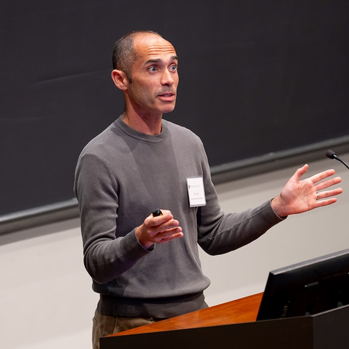

Tom S. Vogl
Home CV Research Teaching

Associate Professor Department of Economics UC San Diego
Contact Information Office: 412 Malk Hall E-mail: tvogl@ucsd.edu
Research Interests Development, Demography, Health, Human Capital